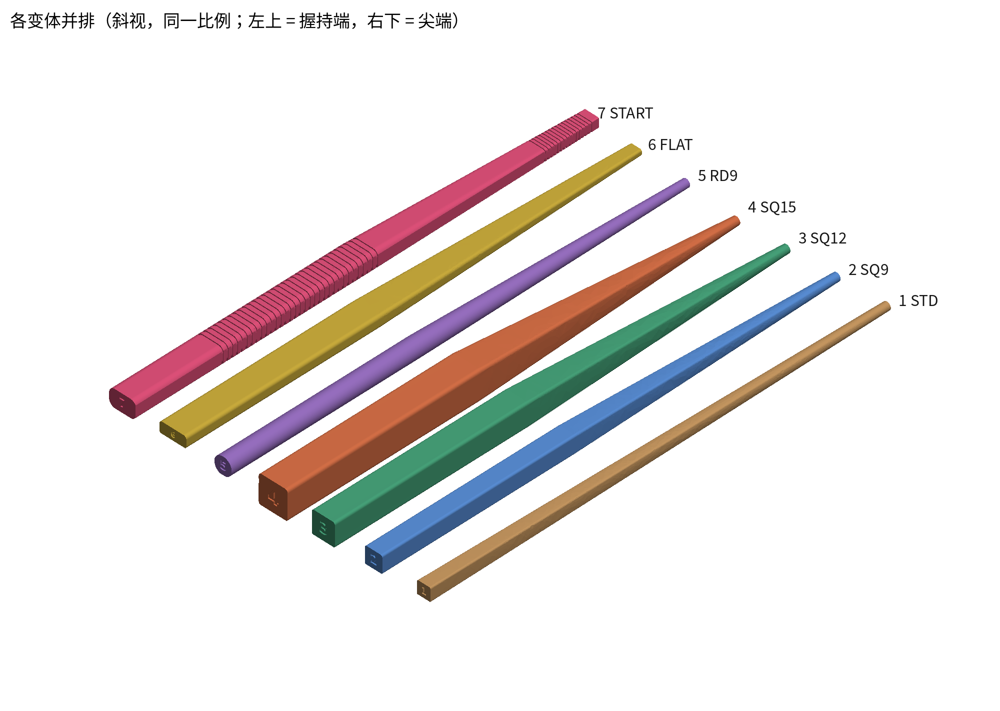
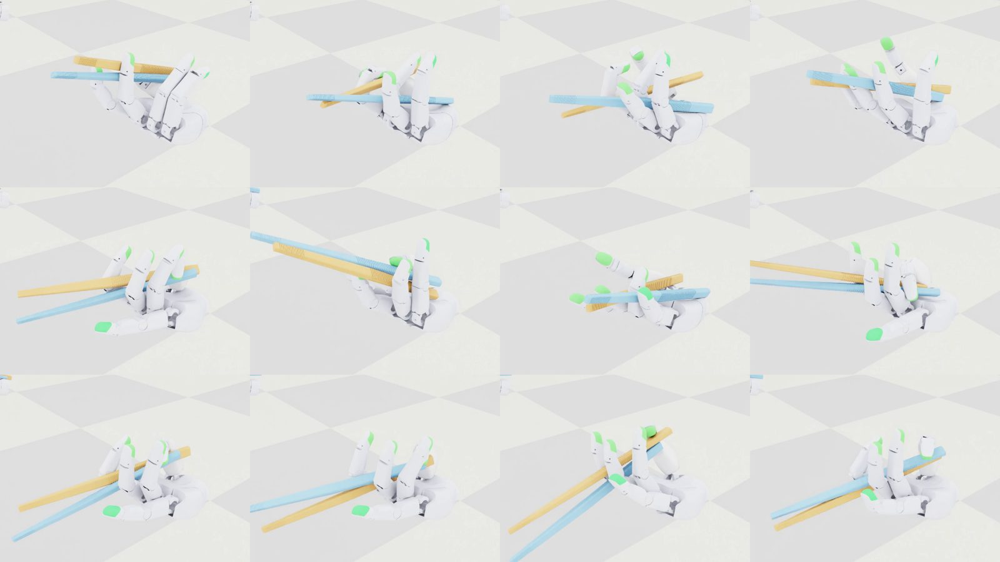
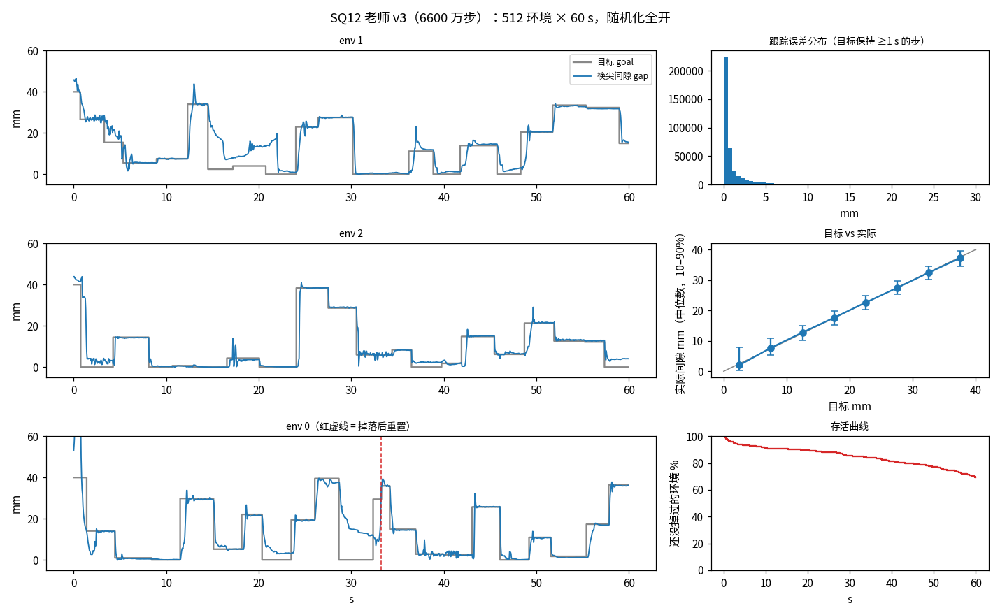

1. 我们设计的筷子
7 种，都是 240 mm 长，还没打印。设计文件在 Hand 仓库 prints/chopsticks/。

| 名字 | 握持段截面 | 尖端 | 打印估重 | 想验证什么 | 仿真稳定握姿 | 全随机摆放的成功率 | 能扛 2 倍自重外力 | 碰到指尖触觉垫 （下筷 / 上筷） |
|---|---|---|---|---|---|---|---|---|
| STD 标准中式 | 方 7×7，全长匀速收锥 | 圆 Ø4 | 5.8 g | 基准：这只手用普通筷子差在哪 | 1871 | 0.09%（36 / 41040） | 105 | 11% / 12% |
| SQ9 | 方 9×9 | 圆 Ø4 | 9.8 g | 粗细第 2 档（约日式粗筷） | 没搜 | 没搜 | 没搜 | 没搜 |
| SQ12 | 方 12×12 | 圆 Ø4 | 14.1 g | 粗细第 3 档（指尖宽的 83%） | 3013 | 0.07%（29 / 41040） | 47 | 4% / 28% |
| SQ15 | 方 15×15 | 圆 Ø4 | 18.9 g | 粗细上限（和指尖一样宽），太粗会不会反而不好捏 | 没搜 | 没搜 | 没搜 | 没搜 |
| RD9 | 圆 Ø9 | 圆 Ø4 | 8.3 g | 和 SQ9 只差形状：方截面防滚有多大用 | 没搜 | 没搜 | 没搜 | 没搜 |
| FLAT | 扁 14×6 | 扁 6×3 | 10.9 g | 宽面约等于指尖宽，指腹整面贴住、不滚 | 2098 | 0.07%（27 / 41040） | 401 | 33% / 40% |
| START 入门款 | 扁方 14×9，带防滑横槽 | 平头 8×5，带横纹 | 14.1 g | 最好拿的起步款 | 2430 | 0.12%（42 / 35308） | 63 | 14% / 10% |
尺寸单位 mm。估重按 PLA、3 圈墙 + 15% 填充算，误差约 ±20%。后 4 列是仿真握姿搜索（见第 2 节），每种尝试 98304 次。
手的尺寸（从官方模型量）：食指指尖宽 14.4 mm；虎口 31–38 mm，比任何一种筷子都粗，没法像人那样用虎口夹住下面那根（推断）。
2. 仿真初试（2026-11-27）
全部是仿真结果，没上真手。数字来自 sharpa-rl-lab-il3/logs/chopsticks_1126/。
任务
- 手固定，和转圆柱训练同一姿态：掌心朝上，指尖抬高 20°。动作和控制同转圆柱：22 维相对目标角，20 Hz。
- 两根自由刚体筷子，不规定握法；目标是筷尖间隙 0–40 mm，每 2–4 秒重新抽一次。
- 观测：老师能看到筷子位姿；学生只有关节角 + 指尖触觉 + 目标。
筷子分头尾：握持端粗，筷尖细
- 模型有锥度，截面见第 1 节的表。连杆原点在握持端端面中心，沿 +x 到筷尖，长 240 mm；
meta.json记了筷尖中心tip_center和握持端中心top_center。 - 目标只量筷尖：间隙 = 两个
tip_center的距离 − 筷尖厚度。 - 握哪一段：握姿搜索时，筷子上离握持端 60–130 mm 的一点放进手上方的采样区（沿手指 70–160 mm，侧向 −40 到 +60 mm，离掌面 15–60 mm）。之后手指随机合拢、碰到就停，实际接触点没有规定。
- 朝哪边：大致沿手指方向，偏航（绕掌心法向）±40°，俯仰 −10° 到 +30°；筷尖朝指尖外伸，伸出握点 110–180 mm。
- 两根的关系：筷尖在同一头，并且同时满足筷尖距 < 60 mm、前后错开 < 30 mm、不交叉、两根轴线最近距离 > 1.15 × 握持段（离端面 80 mm 处）截面最大边 + 1 mm。中点离掌面近的那根定为下筷（橙）。
- 绕长轴转多少没有规定：
roll在 0–2π 里随机，方截面哪面朝上、START 的防滑槽朝哪都是随机的。 - 训练时握点会不会跑：没有直接约束握点位置的奖励项，只有三处间接限制（筷尖中点漂移扣分、关节离开局握姿扣分、任一根重心离开局位置 > 60 mm 判掉落）。手沿筷子滑动 6 cm 以内不会被单独发现。
奖励设计
来源：chopsticks_env.py（_get_rewards / _get_dones / _update_goal）和 chopsticks_env_cfg.py，下面是 v3 的设置，4 种筷子相同；v1、v2 的差别见训练和结果的备注。“每步贡献”= 权重 × tensorboard 里该项最后 20 个记录的平均（START 训练到 2 亿步，SQ12 到 0.66 亿步）。
目标
- 间隙 G =
|tip_b − tip_a| − 筷尖厚度；厚度取筷尖宽、厚里小的那个：START 5 mm，STD / SQ12 4 mm，FLAT 3 mm。 - 开局目标 = 这个握姿本来的间隙（截到 0–40 mm），保持 0.5–1.5 s（10–30 步）；之后每 2–4 s（40–80 步）重抽一次，0–40 mm 均匀分布，其中 20% 直接设成 0（合上）。
- 误差
e = |G − 目标|；目标为 0 时e = max(G, 0)（代码注释：压得更紧不算误差）。 - 奖励只看筷尖，没有“哪根手指碰哪根筷子”的项，只有
p_pose把关节拉向这一局开局的握姿。
每一项（绿底 = 加分 红底 = 扣分；每步算一次，一局最长 20 s = 400 步，每步最多 +4）
| 项 | 式子 | 权重 | 封顶 / 尺度 | 作用 | START 每步 | SQ12 每步 |
|---|---|---|---|---|---|---|
| 存活 | 1 | 1.0 | — | 没掉就有 | +1.00 | +1.00 |
粗跟踪 r_track | exp(−e / 0.008) | 2.0 | e = 8 mm 时 0.37 | 推断误差大时也有梯度 | +1.12 | +1.52 |
精跟踪 r_fine | exp(−e / 0.002) | 1.0 | e = 2 mm 时 0.37 | 推断逼近到毫米级 | +0.35 | +0.53 |
| 前后错开 | clamp(|(tip_b − tip_a)·û| / 0.03, 0, 1)，û = 两根“握持端 → 筷尖”方向的平均 | 0.5 | 30 mm 封顶 | 两个筷尖沿筷子方向别一前一后 | −0.17 | −0.10 |
| 交叉 | relu(−cos∠(mid_b − mid_a, tip_b − tip_a))，筷尖距小于 5 mm 时按 5 mm 算 | 0.5 | 0–1 | 两根在前半段交叉 | −0.002 | −0.002 |
| 漂移 | clamp(|筷尖中点 − 开局筷尖中点| / 0.10, 0, 1) | 1.0 | 100 mm 封顶 | 筷尖别整体乱跑 | −0.34 | −0.26 |
| 筷子速度 | |v_a| + |v_b|（重心线速度，m/s） | 0.3 | — | 筷子别晃 | −0.013 | −0.014 |
| 偏离握姿 | Σ (q − q_开局)²（22 个关节，rad²） | 0.05 | — | 别离开局握姿太远 | −0.18 | −0.16 |
| 力矩 | Σ τ² | 0.1 | — | 推断省力 | −0.042 | −0.039 |
| 功 | min((Σ τ·q̇)², 10) | 0.5 | 10 | 推断省力、动作别猛 | −0.012 | −0.026 |
| 动作变化 | Σ (a_t − a_{t−1})² | 0 | — | 代码里有，没开 | 0 | 0 |
| 合计 | 核对：回报 ÷ 局长，START 543 ÷ 317 = 1.71，SQ12 865 ÷ 360 = 2.41 | +1.72 | +2.45 | |||
“功”的贡献按 tensorboard 里没封顶的平均算，封顶后只会更小。
结束条件：相对开局，任一根重心移动 > 60 mm、任一根重心下降 > 40 mm、间隙 > 100 mm 或状态出现 NaN 就算掉；20 s（400 步）超时。掉了不另扣分，只是拿不到后面每步的分。
重力课程：4.0 → 9.81 m/s²，全局一个重力，所有环境一起变。每个控制步算 ema = 0.98·ema + 0.02·这一步的掉落比例（初值 0.05），前 1000 步不加，之后 ema < 4e-3 就加 0.01，每步最多加一次。4 次 v3 都是 1660 万步开始加、2610 万步到 9.81（tensorboard gravity_z）；4.0 → 9.81 要加 581 次，每次 16384 步，合 952 万步，和实测的 950 万步一致：一开始加就没停过。
没解决的
- 漂移压不下来：START 的漂移项从 1840 万步到 2 亿步一直在 0.34–0.36（平均约 35 mm），评估中位 25–36 mm。
- 重力课程的条件没起作用：v3 到第 1000 步时掉落已经低于阈值，实际等于在约 580 个控制步里匀速从 4.0 加到 9.81。
- START 跟踪误差停了：训练里的平均误差 1.09 亿步以后一直是 8.4–8.8 mm。SQ12 到 0.66 亿步时 3.7 mm，还在降。
- 握点没有直接约束，手沿筷子滑动 6 cm 以内不会被单独发现（见头尾）。
起始握姿：自动搜，不靠人示范
随机摆筷子 → 手指合拢 → 撤掉支撑，在重力和扰动下还稳住的留下。搜了 START、STD、SQ12、FLAT 四种，数字在第 1 节的表里。其余稳定握姿是在全随机成功的握姿上加小扰动繁殖出来的。筷子大多夹在指节侧面和指缝里，不像人的握法。

训练和结果
每次正式训练一行，包括没采用的。
| 筷子 | 类型 | 版本 | 重力 | 步数 | 局数 | 用时 | 末段回报 | 从不掉 （共 512） | 间隙误差 mm 中位 / 平均 | 误差在 2 mm 内 | 目标 0 时 间隙中位 | 备注 |
|---|---|---|---|---|---|---|---|---|---|---|---|---|
| START | 老师 | v1 | 2.0（没加上去） | 0.81 亿（手动停） | 523,665 | 44 分钟 | 326 | 没评估 | 没评估 | 没评估 | 没评估 | 没采用。存活分 0.5，漂移 0.5 / 封顶 50 mm；重力课程照搬转圆柱：从 2.0 起，这一步掉落比例 < 5e-4 才加 0.05。每步掉落比例 0.0015–0.012，从没低于 5e-4，重力全程 2.0 |
| START | 老师 | v2 | 2.0（没加上去） | 0.33 亿（手动停） | 1,774,057 | 18 分钟 | 最低 −66，停时约 6 | 没评估 | 没评估 | 没评估 | 没评估 | 没采用，策略崩了。从 v1 的 6500 万步存档续训；漂移改成 1.5 / 封顶 100 mm，加重力改成掉落比例滑动平均 < 4e-3 就加 0.01（cfg 注释：v1 重力一直停在 2.0）。局长从约 220 步掉到 15–32 步，掉落比例 0.015–0.069；3.3M 步时每步平均回报约 −1.1（−35 ÷ 32 步）。推断掉落不另扣分，每步为负时早掉反而亏得少 |
| START | 老师 | v3 | 4.0 → 9.81 | 2.00 亿 | 703,737 | 101 分钟 | 499 | 303 | 1.72 / 7.40 | 51% | 12.8 mm | 存活分改成 1.0，漂移 1.0 / 封顶 100 mm，重力从 4.0 起。改的原因代码里没写；推断针对 v2 每步回报变负 |
| STD | 老师 | v3 | 4.0 → 9.81 | 0.66 亿 | 288,830 | 35 分钟 | 453 | 294 | 3.22 / 8.29 | 43% | 7.2 mm | 同 START v3 |
| SQ12 | 老师 | v3 | 4.0 → 9.81 | 0.66 亿 | 237,397 | 31 分钟 | 894 | 356 | 0.40 / 1.97 | 82% | 1.4 mm | 同 START v3 |
| FLAT | 老师 | v3 | 4.0 → 9.81 | 0.66 亿 | 299,240 | 38 分钟 | 452 | 267 | 6.16 / 10.72 | 37% | 17.5 mm | 同 START v3 |
| SQ12 | 学生 | v3 | 全程 9.81 | 1.00 亿 | 276,482 | 约 46 分钟 | 601 | 227 | 4.48 / 6.64 | 25% | 7.1 mm |
末段回报是训练末段的平均回报。评估：512 个环境跑 60 秒，随机化全开，正常重力；误差只算目标已保持 1 秒以上的步；绿色是这一列最好，红色是最差。所有训练相同：16384 个环境，RTX 5090；随机化为手的 PD 刚度、阻尼 ×0.5–2，摩擦倍数 0.7–1.5，关节噪声 ±0.02 rad，触觉增益 ×0.4–2.5；筷子摩擦 0.5–0.8，质量 ×0.8–1.25，重心沿长度 ±5 mm，随机外力。

结论和限制
- 做到了：握住两根自由的筷子，筷尖间隙跟着目标开合。
- 只在一部分握姿上成立：START 评估用到的 2350 个握姿里，只有 260 个（11.1%）是“用到就不掉、误差 < 3 mm”的好握姿。好握姿集中在一根被拇指 + 食指 + 中指夹住、另一根被中指 + 无名指（有时加手掌）夹住。
- SQ12 最好学，但排序有混杂：每种筷子的握姿都只来自 27–42 个全随机成功的握姿，每种只训了一个随机种子。
- 学生比老师差一个量级（误差中位 4.48 vs 0.40 mm），因为握姿大多碰不到指尖触觉垫，学生看不到筷子。
- 筷尖中点漂移中位 25–36 mm，偏大。
- 筷子按刚体算（真打印件会弯）；手外壳摩擦按 0.1 算，没测过。
- 最大的缺口：真手上怎么把筷子放进手里，还没有办法。
3. 文献：机器人和仿真工作
前 5 篇是筷子本身，后 4 篇是紧邻方向（多指手用镊子 / 夹子等开合工具、把筷子当考题的基准和综述）。9 篇都在文献库里，前 5 篇和 POMDAR 带细标签“用筷子”。
| 年份 | 文章 | 路线 | 手 / 硬件 | 方法 | 真机 / 仿真 | 感知 | 做到什么（原文数字） | 代码 / 数据 |
|---|---|---|---|---|---|---|---|---|
| 2020 | TeleChop（IROS 2020） Telemanipulation with Chopsticks: Analyzing Human Factors in User Demonstrations |
筷子装在臂上，当 1 自由度夹爪 | 自制 6 自由度臂，末端一对电动筷子：一根固定，一根装在电机轴上，同一平面开合 | 遥操作：人拿贴了动捕标记的筷子，臂跟着动；25 人用户研究 | 真机 | OptiTrack 11 台相机跟踪人手里的筷子；没有触觉和力反馈 | 25 人 × 5 种物体（泡沫、薯片、螺母、铅笔、14 mm 玻璃球）× 3 种方式（普通筷子、动捕筷子、遥操作）× 3 次；遥操作在 3/5 种物体上成功率最高；各物体成功率只在图里，没列数字 | 原文没给 |
| 2020 | Grasping with Chopsticks（ICRA 2021） Grasping with Chopsticks: Combating Covariate Shift in Model-free Imitation Learning for Fine Manipulation |
筷子装在臂上，当 1 自由度夹爪 | 同组的 6 自由度臂 + 1 自由度电动筷子 | 模仿学习：每种物体 500 条遥操作示范；行为克隆 + 最近邻集成，换到物体坐标系、加噪声造纠偏标签 | 真机 | 物体位置靠外部跟踪 + 臂末端位姿；没有触觉 | 夹起 1 cm 方块 / 20 mm 球 / 14 mm 球并举 1 s，各 25 次：96% / 84% / 60%，平均 80.0%；普通行为克隆 37.3%；人遥操作 82.7%（摘要写 82.6%） | 原文没给 |
| 2022 | Chopsticks Gripping Styles（SIGGRAPH 2022，ACM TOG 41(4)） Learning to Use Chopsticks in Diverse Gripping Styles |
多指手握两根独立的筷子 | 仿真人手 30 自由度（拇指 6、四指各 4，其余模拟手掌变形，虎口单独建模），装在 7 自由度仿真臂上；还试了几种非人手形态 | 两层：贝叶斯优化 + PPO 找握姿（17 种握法）；运动规划出筷子轨迹，PPO 训练手去跟 | 仿真（MuJoCo 1.5，100 Hz） | 仿真状态；没有视觉和触觉 | 手握两根独立的筷子夹起、搬运、扔出、叠放不同形状大小的物体；标准握法学得最快、回报最高；连续搬运的成功率只在图里；17 种握法的贝叶斯优化共约 6 天 | GitHub（含预训练模型，依赖 mujoco_py 1.50） |
| 2023 | CherryBot（RSS 2023） Cherry-Picking with Reinforcement Learning: Robust Dynamic Grasping in Unstable Conditions |
筷子装在臂上，当 1 自由度夹爪 | 自制 6 自由度臂 + 筷子末端 | 强化学习：MuJoCo 近似仿真预训练 + 启发式控制器的数据 + 真机 30 分钟微调 | 真机 | 训练时 OptiTrack 给物体位置，测试时用相机分割或 YOLO；没有触觉 | 夹弹珠、樱桃、悬绳摆动的小球，6 秒内允许重试，各 10 次全成；换 10 种新物体共 100 次，成功 64% | 项目页只有视频，没有代码 |
| 2023 | HASHI（ICRA 2024） HASHI: Highly Adaptable Seafood Handling Instrument for Manipulation in Industrial Settings |
专门做的多自由度筷子机构 | 专门做的筷子夹持器：两根筷子各 3 个舵机（俯仰、偏航、升降 35 mm），装在 7 自由度协作臂上 | 运动学模型；臂遥操作到预抓位姿，筷子按程序合拢 | 真机 | 每根筷子 1 个 6 轴力 / 力矩传感器 | 12 种食物（寿司、扇贝、葡萄、毛豆、锅贴、刺身、西兰花、虾等）：举起平移 9/12 种不掉，转 90° 8/12 种不掉；力读数能分出不同硬度的硅胶块 | GitHub、文档（代码、物料单、装配说明） |
| 2025 | 镊子分层强化学习（IROS 2025） Hierarchical Reinforcement Learning for Articulated Tool Manipulation with Multifingered Hand |
多指手用带铰链的开合工具 | Schunk SVH 五指手（20 个关节、9 个主动自由度）装在臂上，操作镊子状工具 | 分层强化学习（SAC）：低层调镊子开口，高层控臂；点云编码器估工具开口 | MuJoCo 训练，真机验证 | Azure Kinect 点云；没有指尖触觉，原文把打滑、握力不够的失败归于这一点 | 用镊子夹 1.5–2.5 cm 的球、方块、圆柱、四面体，每种 12 次：第一次就成 54.2%，允许多次尝试 70.8% | 原文没给 |
| 2025 | Articulated Tools / CATFA（arXiv） In-Hand Manipulation of Articulated Tools with Dexterous Robot Hands with Sim-to-Real Transfer |
多指手用带铰链的开合工具 | Inspire 手（6 个主动自由度）+ 自加的 36×44 电阻式触觉阵列；干扰实验时装在 Franka 臂上 | Isaac Lab 里训特权老师，蒸馏成学生；再用不到 50 条真机示范学“触觉 + 关节力”的修正模块 | 真机 | 全手触觉 + 各主动关节的力 | 在手里开合手术夹、食物夹、钳子、腹腔镜器械、订书机，每种约 10 次真机，成功率都是 100% | 项目页只有图，没有代码 |
| 2026 | POMDAR（arXiv） A Benchmark of Dexterity for Anthropomorphic Robotic Hands |
把筷子当灵巧度考题 | ORCA 手，锁关节得到 5 / 7 / 11 / 16 自由度四种配置，装在 Franka 臂上 | 基准：按人手运动分类法设计 18 项任务，其中一项是筷子（两根杆约 ±20° 受限转动，沿弯曲导轨移动）；遥操作测 | 真机 + MuJoCo | 遥操作（Rokoko 手套或 Apple Vision Pro） | 原文：筷子、挤压、掌心几项需要拇指或多指侧摆，只有部分配置做得了；各配置的筷子得分只在雷达图里，没列数字 | GitHub（代码、仿真、CAD）、项目页（有视频） |
| 2026 | 灵巧度评测综述（Annual Review of Control, Robotics, and Autonomous Systems 第 10 卷，2027 待发表） Benchmarking Dexterity of Multifingered Robot Hands: A Review and Perspective |
把筷子当灵巧度考题 | — | 综述 | — | — | 把用筷子夹饺子拆成三类操作：下面那根是固定抓握，上面那根是手内操作，推饺子是非抓握操作；基准清单里有“用筷子把小木块一块块夹进容器” | — |
各路线现状：臂上 1 自由度筷子，真机夹 1–2 cm 小物体平均 80%（Grasping with Chopsticks），允许重试时夹摆动小物体 10/10（CherryBot）；专门的多自由度筷子机构（每根 3 个舵机 + 力传感），真机 12 种食物 8–9 种不掉；多指手握两根独立筷子，只有仿真；多指手用带铰链的工具，两半连着不会散开，真机镊子夹物 70.8%、开合 5 种工具 100%；灵巧度考题只给评分方法和得分图，是遥操作，不是自主策略。
没找到的：真机多指灵巧手自己（不靠遥操作）握两根独立筷子夹东西的论文；Sharpa Wave 或其他 22 自由度手用筷子的工作或视频；多指手用筷子的公开数据集。
4. 文献：人手怎么握筷子
设计握姿时用得上的人手研究。没收进文献库（文献库只收机器人工作）。
- 2009 Chen 等，Kinematics analysis of chopsticks manipulation（IFMBE Proceedings 25/9，410–413 页）。11 人（平行握 6、交叉握 5），在筷子上、下两个位置握，测手和腕的关节角、两筷夹角、筷尖距离、接近速度。交叉握的筷子夹角更大；平行握的动作模式变化更多；作者认为同一种握法内部差别也大，需要更细的分类。
- 2020 Shimomura 等，What is the significance of the traditional pinching mode of holding chopsticks?（Journal of Physiological Anthropology 39）。8 人分两组用非惯用手练 5 天：传统“钳式” vs “剪刀式”，测完成时间和 5 块手部肌肉的肌电。钳式完成时间显著更短；钳式组小指短屈肌的活动显著增加，剪刀式组没有。
- 2024 Choji、Saito，Motion capture-based evaluation of lower chopstick stability（Journal of Physical Therapy Science 36(9)，551–556 页）。34 名健康成人，动捕测下面那根稳不稳，再用非惯用手练 10 天。标准握法下面那根握住不动、上面那根负责开合；惯用手的下面那根显著更稳；非惯用手练 10 天后稳定性显著提高（摘要没给数字）。
5. 难在哪
- 两根杆不相连，也没有指环。手要同时握住并操纵两根独立的杆；筷子上没有剪刀那种指环来稳住手和工具的接触；夹东西的接触点在杆尖，离手握的地方很远。（Chopsticks Gripping Styles 引言）镊子、剪刀、夹子都有铰链，筷子没有，所以这几篇工具论文的结果不能直接套到筷子上。
- 一根稳住、一根动。标准握法下面那根握住不动、上面那根负责开合（Choji 2024）；综述把下面那根归为固定抓握、上面那根归为手内操作（灵巧度评测综述 图 1）。仿真里拇指几乎总在扶上面那根，下面那根主要靠虎口托住（Chopsticks Gripping Styles 5.2 节）。
- 握法有很多种，标准握法最好学。按每根手指碰哪根筷子算，人手理论上有 35 = 243 种握法，去掉不合理的剩 17 种；标准握法（拇指、食指、中指碰上面那根，无名指碰下面那根，小指不碰）在仿真里学得最快、回报最高（Chopsticks Gripping Styles 7.1 节）；人身上传统钳式握法完成任务也更快（Shimomura 2020）。
- 筷尖要毫米级的准。筷尖小、弯、滑；自制臂末端误差 1–6 mm，和小物体的半径差不多（Grasping with Chopsticks）；夹樱桃要亚毫米精度（CherryBot）。
- 摩擦和力。仿真里物体和筷子之间的摩擦系数越小越难夹，筷子还会在几次搬运后慢慢从手里滑出去（作者认为和 MuJoCo 的软接触有关）（Chopsticks Gripping Styles 7.5 节）；多指手用镊子时，握力不够打滑是主要失败原因之一，原文归因于没有指尖触觉（镊子分层强化学习）。
- 要侧摆。POMDAR 用同一只 ORCA 手锁不同的关节测，筷子任务需要拇指或多指侧摆，只有部分配置做得了。
6. 对我们的 Sharpa Wave 意味着什么（调研时的推断）
- 推断自由度：Sharpa 四指根部能侧摆 ±18°，拇指第二关节也能侧摆（见两只手的区别），满足 POMDAR 说的“要有侧摆”。但 POMDAR 用的是 ORCA 手，侧摆角度够不够握筷子，没测。
- 推断触觉：镊子那篇缺的正是指尖触觉；Sharpa 每个指尖有 60×60 触觉阵列，可能能用来发现筷子打滑。能不能真分辨出来，没测。
- 推断虎口：仿真里下面那根筷子靠虎口托着，那篇的手掌是能变形的。Sharpa 的手掌靠近虎口处能不能稳住一根筷子，没测。
- 推断仿真：唯一有代码的手握筷子工作（Chopsticks Gripping Styles）用的是 MuJoCo 1.5 + mujoco_py，和我们的 Isaac Lab 环境不通用，筷子任务要在 Isaac Lab 里自己搭。Articulated Tools 在 Isaac Lab 里训练、带触觉上了真机，流程可参考。
- 推断机械臂：已有真机筷子工作全靠臂把筷尖送到物体上。我们的手固定不动，没有臂时只能做“手里握稳两根筷子 + 开合”，或者夹放到筷尖附近的物体。
7. 搜到但没收的
- TUAT/Karlsruhe 五指仿人手（据说能用筷子）：原始页面打不开（ResearchGate 403），作者、年份、筷子实验细节都核实不了。
- Development of robot system for meal support using chopsticks（多指手遥操作用筷子）：原始页面打不开（ResearchGate 403），核实不了。
- Grasp and Transport Control of a Chopsticks-Type Robot（Yamasaki 等）：全文要付费，只看到摘要；是弹性关节二指手，不是多指手。
- KIWI（arXiv 2609.22809）：“chopstick gripper”只是人手拿着采数据的铰链夹爪，不涉及用筷子。
- Mana（arXiv 2606.13677，多指手用 4 种开合工具）、腹腔镜“筷子”手术机器人、软体驱动器筷子机器人：和筷子关系较远，没打开原文核实。
- Yamauchi 等 2010（“标准握法最有效”）：只在 Chopsticks Gripping Styles 里被引用，没找到原文。